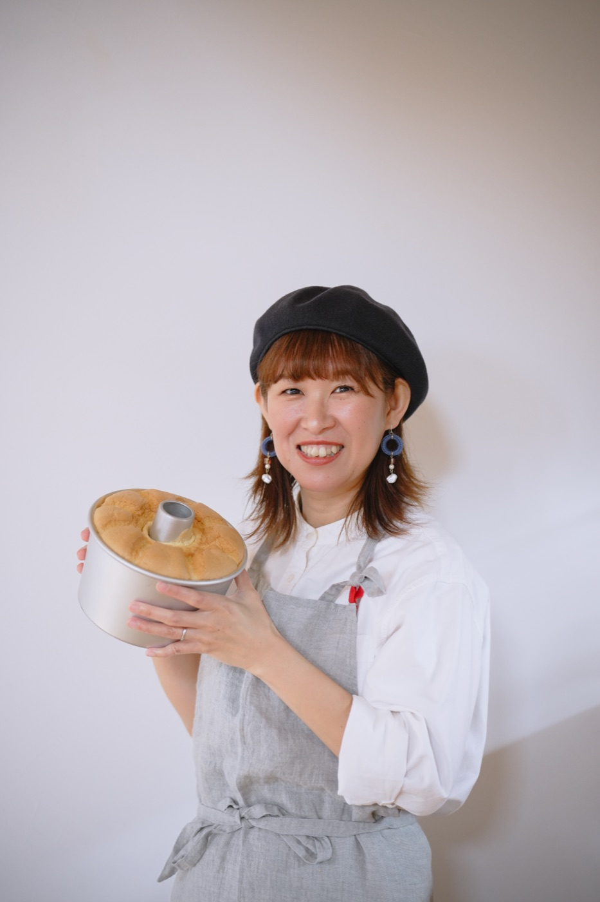
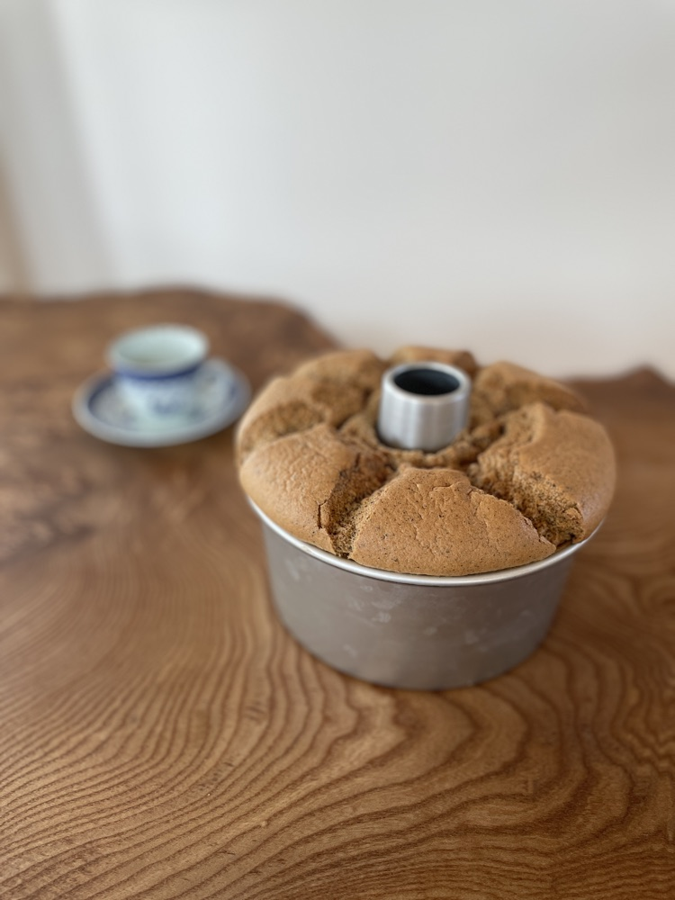
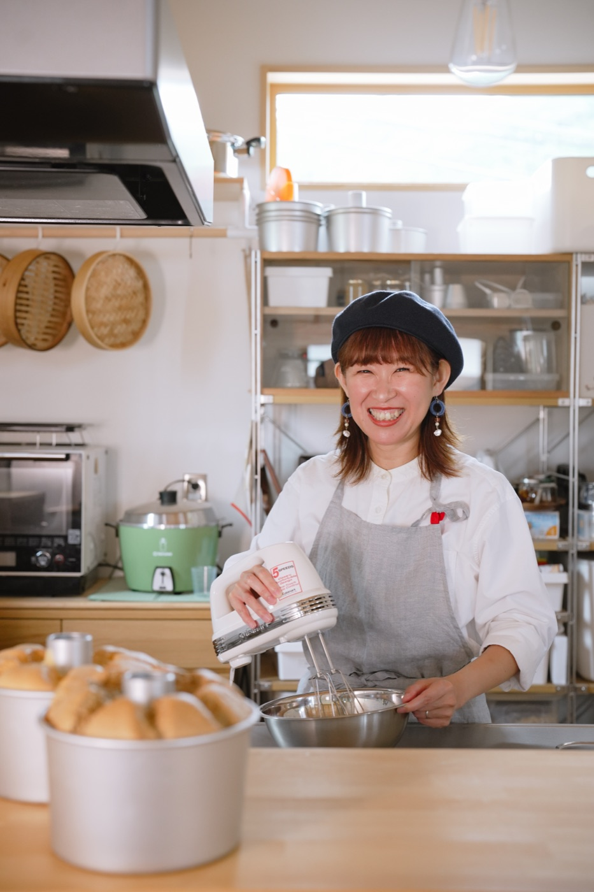
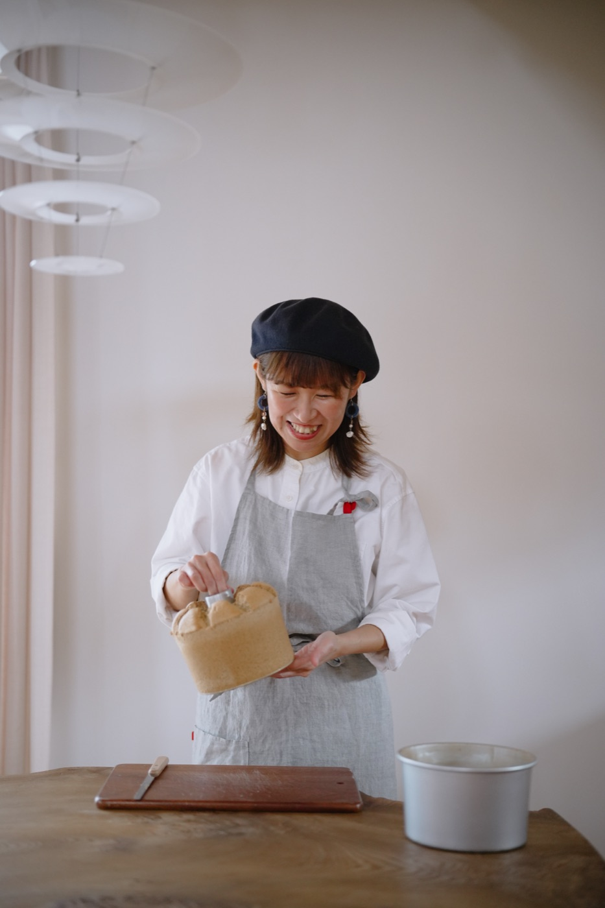
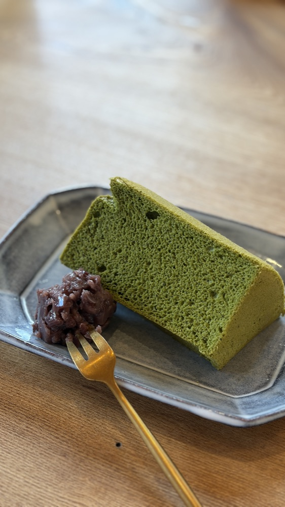
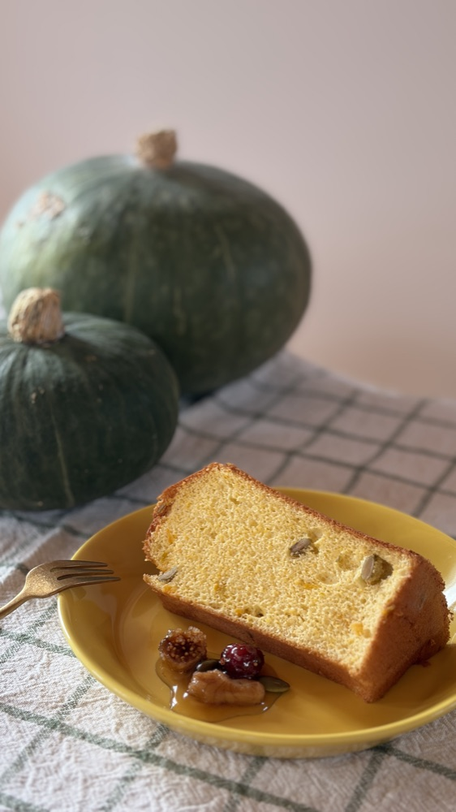
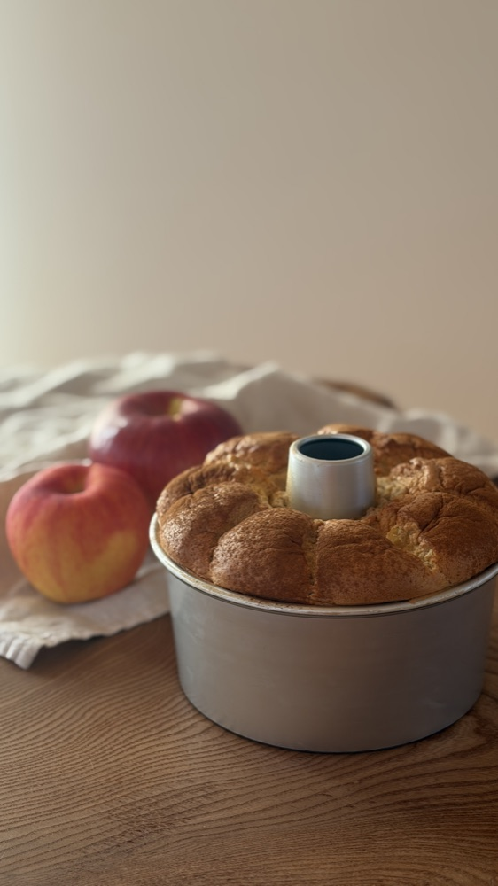
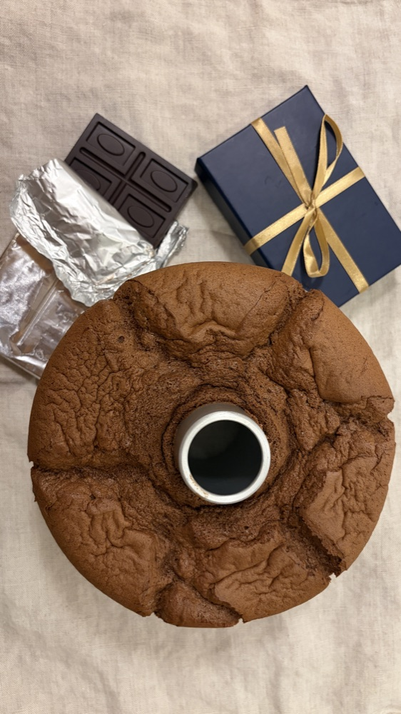
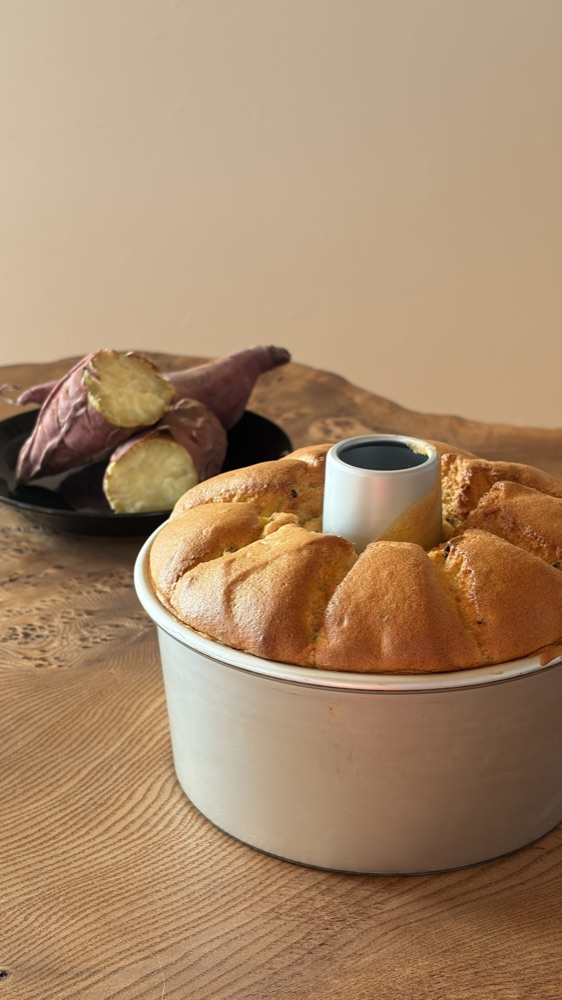

基本を身につけながら慣れていく
プレーンの次にアレンジしやすいシフォン作りをお伝えします。
- 有機紅茶オーガニックのアールグレイで、紅茶の香りが広がります。受講後は、お好きな茶葉で作れます。
- バナナ子どもたちに人気のフレイバー。手に入る時は、なるべくオーガニックのバナナで。
- にんじん生のにんじんをたっぷり入れる、お野菜シフォンです。
1回 12,000円（税込）
體にやさしいおやつを作りたい。でも、美味しさもあきらめたくない。そんな想いから、油を使わない米粉のシフォンを作り続けています。「私にもできた」という小さな自信を、シフォンを通して積み重ねていただけたら嬉しいです。
次回 11月24日（火）10:00〜12:30
デモンストレーションレッスン 8,800円（税込）・ご試食付き

原因を一緒に見つけながら、
少しずつ「私にもできた」を積み重ねていきましょう。
基本の材料は、平飼い卵、米粉、オーガニックシュガー、塩、お水のみ。オイル・ベーキングパウダー・乳製品は使いません。
油を使わず、ふわっと軽く、やさしい口どけに仕上げます。
小麦粉を使わず、米粉で焼き上げます。
自分で作るからこそ、安心できる材料を選べます。
一つ一つの工程を丁寧にお伝えするので、お菓子作りが初めての方も大丈夫です。
特別な道具や技術がなくても、おうちで再現できる作り方をお伝えしています。


ノンオイル米粉シフォン専門教室 hirona 主宰 島根県松江市
シフォンは、私に「得意」と「自信」をくれました。
以前の私は、「これが得意です」と言えるものがなく、自分に自信が持てませんでした。お菓子作りは小さい頃から好きでしたが、シフォンは型より上に膨らんだことがありませんでした。
そんな私がシフォンを学び、少しずつきれいに焼けるようになると、焼く時間そのものが楽しみになりました。「私にもシフォンが焼ける」という、自分の中の「得意」ができたんです。
だから私は、過去の私のような方にシフォンをお届けしたいと思っています。上手に焼けるようになることだけが目的ではなく、「私にもできた」という小さな自信を積み重ねて、自分のことを少し好きになったり、新しいことに挑戦するのが楽しくなったり。シフォンを通して、そんな変化を感じていただけたら嬉しいです。
まずは見て、食べて。そこから、あなたに合った学び方を選んでいただけます。
単発レッスン・コースレッスンをご受講いただく前に、必ずデモンストレーションレッスンにご参加いただきます。
ただし、2025年度までに受講歴のある方は、デモンストレーションレッスンにご参加いただかなくても、中級・上級の単発レッスンを受講いただけます。レッスンでお伝えする内容を、すでにお伝えしているためです。
プレーンシフォンを私が作るところを見ていただきます。ご試食付きです。
8,800円（税込）
気になるフレイバーを1つずつ。初級・中級・上級から選べます。単発レッスンは初級からのスタートです。デモンストレーションレッスンにご参加いただいたあとに、お進みいただけます。
12,000円〜（税込）
基礎から応用まで、じっくり学びたい方へ。初級・中級・上級を2回ずつ受講します。こちらも、デモンストレーションレッスンにご参加いただいたあとに、お進みいただけます。
80,000円（税込）
各レベルを2回ずつ受講すると、次のレベルへ進んでいただけます。
ノンオイル米粉シフォンの作り方や材料のことを知りながら、シフォンづくりの楽しさを感じていただけたら嬉しいです。

対面レッスンは、マンツーマンまたは2名までの少人数制です。初級・中級・上級の3つのレベルから、お好きなフレイバーを選んでいただけます。レッスンの最後には、焼き上がったシフォンの試食もあります。
プレーンの次にアレンジしやすいシフォン作りをお伝えします。
1回 12,000円（税込）
下処理が必要なフレイバー、工夫やコツが必要なフレイバーをお伝えします。
1回 13,000円（税込）
温度管理や水分調整が難しいフレイバーをお伝えします。
1回 15,000円（税込）





対面レッスンのお持ち物：エプロン、ハンカチ、筆記用具、シフォン持ち帰り用のカバン（夏場は保冷バッグ・保冷剤があると安心です）。作ったシフォンは、お持ち帰りいただけます。
基礎から応用まで、じっくり学びたい方へ。美味しく作れるようになると、日常がちょっと特別になります。一緒に、シフォンのある暮らしを楽しみましょう。
初級2回 ＋ 中級2回 ＋ 上級2回（全6回）
80,000円（税込）
各レベルの中から、お好きなフレイバーを2種類ずつお選びいただけます。コースは、初回のみご希望日を決めていただき、2回目以降はレッスン後にご予約いただきます。
5大特典は、コースレッスンを受講の方限定です。単発レッスンには付きません。オーブン理解シートは、あなたのオーブンに合わせて作る、あなただけのシートです。
レッスンを受けてくださった方のご感想です。お名前は載せていません。
シフォンは焼いていたけれど、いまいち膨らまず、横割れしていたという生徒様。レッスンのあと、ご自宅で焼いた写真を送ってくださいました。「良い感じに膨らんで嬉しかったです」とのことです。
シフォンを焼いたことがなかった生徒様が、レッスンのあと、1日に2回も焼くほど夢中になってくださいました。
バナナシフォンを受講された生徒様が、ご自宅に帰られてから、ご自身のアレンジでかぼちゃシフォンを焼かれたと、写真を送ってくださいました。基礎をしっかりお伝えしているので、アレンジが難しいシフォンも、うまくいくことが多いです。
焼いたシフォンをラッピングして、お友達に配って喜ばれたという生徒様。「生活にハリが出て、毎日が楽しいです」と話してくださいました。
はい。単発レッスン・コースレッスンをご受講いただく前に、必ずデモンストレーションレッスンにご参加いただきます。基礎を学んでから、実際にご自身で作る対面レッスンへ進んでいただくためです。ただし、2025年度までに受講歴のある方は、デモンストレーションレッスンにご参加いただかなくても、中級・上級の単発レッスンを受講いただけます。レッスンでお伝えする内容を、すでにお伝えしているためです。
もちろん大丈夫です。講師のデモンストレーションを見ていただきながら、一つ一つ丁寧にご説明します。
デモンストレーションレッスンは、一度に4名までです。対面レッスンは、マンツーマンまたは2名までです。
デモンストレーションレッスンは、筆記用具のみです。対面レッスンは、エプロン、ハンカチ、筆記用具、シフォン持ち帰り用のカバン（夏場は保冷バッグ・保冷剤があると安心です）をお持ちください。
高校生以上の方（一人で作ることができる方）が対象です。
お申込みフォームからお進みください。ご要望などがありましたら、公式LINEへ直接メッセージをお願いします。
現在は、商用利用はできません。私のレシピや作り方を使った販売やレッスンは、お受けできません。
島根県松江市で開催しています。住所の詳細は、ご予約確定後にお伝えします。
単発レッスンは、初級からのスタートです。2025年度までに受講歴のある方は、デモンストレーションレッスンにご参加いただかなくても、中級・上級も単発で受講いただけます。
作って楽しい、食べて美味しい、贈って喜ばれるシフォン作りを、丁寧にお伝えします。自分時間を大切にしながら、新しい一歩を踏み出してみませんか。ご参加をお待ちしています。
日程のお知らせ・ご質問は、公式LINEからお気軽にどうぞ。
会場：島根県松江市（住所の詳細は、ご予約確定後にお伝えします）